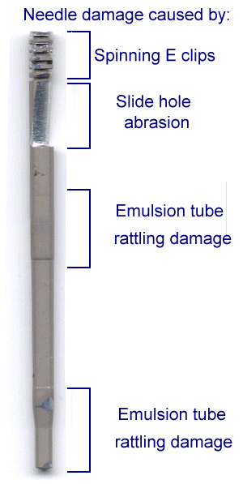

 | Descriptions and Causes |
| Spinning E-clips (also known as C clips): When installing E clips, make sure that they are a snug fit in the needle groove. If the clip rotates freely in the groove, it will "erode" the base groove and will eventually saw the needle into two pieces or the clip will actually fail. Replace distorted clips if available or, if absolutely necessary, gently pinch the clip to decrease its diameter. Replace the clip as soon as possible. | |
| Slide Hole Area: If the needle rotates when it is installed, it will wear into a "funnel" shaped cross section. If it is prevented from rotating when installed, it will wear as shown in the diagram. Eventually, in either case, the needle will mechanically fail, but this wear, unless the needle physically breaks, usually doesn't cause a huge change in richness. This needle is from a Legend Series fj1200 and is excessively worn, very fragile and should be replaced now. If the diameter is only .002"-.005" worn at the slide, it won't appreciably affect jetting. If the needle is worn and the needle jet is made of brass, you should inspect the needle jet for wear - especially if there is a problem with excess richness at low rpm. See Needle Jet Wear. | |
| Emulsion tube rattling damage (base): If the needle is prevented from rotating when installed, the needle will often show wear or at least a "witness mark" on one side of the needle. Usually, it's not the most significant wear area - with other areas of the needle or the needle jet being much more significant, as far as wear causing excess richness is concerned. Steps in the needle, as manufactured, do increase wear in needle jets and also cause part throttle inconsistencies. | |
| Emulsion tube damage (tip): If the needle is too long, it may bottom out into the bore of the main jet or the end of the needle tube. Common in HD kits from some carb kit manufacturers. Also, if a Keihin or Factory Pro K style jet is improperly used in a Mikuni carburetor, the needle tip may rattle on the 2.45mm lead-in diameter. The Mikuni jets have a 2.95mm lead-in diameter. |